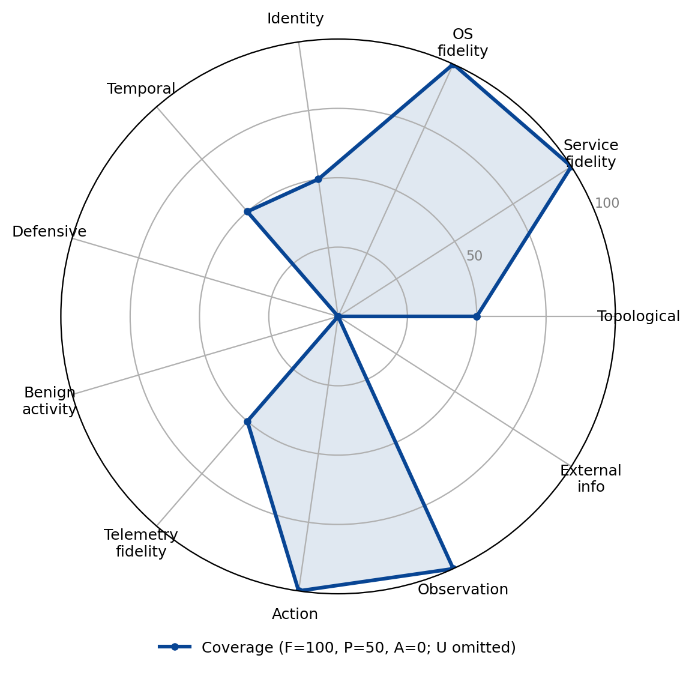

PenGym
Family: Real-software emulator · Category: B

A Gym environment backed by real vulnerable services behind a NASim-compatible interface; strong service, OS, action, and observation fidelity.
Best suited for: Worm / self-propagation, Credential-based privilege escalation, Network architecture attack-path analysis.
Dimension coverage
| Dimension | Coverage |
|---|---|
| Topological realism | Partial |
| Service fidelity | Full |
| OS fidelity | Full |
| Identity realism | Partial |
| Temporal dynamics | Partial |
| Defensive realism | Absent |
| Benign activity realism | Absent |
| Telemetry fidelity | Partial |
| Action realism | Full |
| Observation realism | Full |
| External information ecosystem | Absent |
Fit by objective
Suitability is a property of the (environment, objective) pair; a “not suitable” verdict names the dimension the objective needs that this environment abstracts.
| Objective | Verdict | Why |
|---|---|---|
| Targeted data exfiltration | Not suitable | does not provide Defensive realism, Benign activity realism, External information ecosystem, dimensions this objective treats as critical |
| Ransomware deployment | Not suitable | does not provide Defensive realism, a dimension this objective treats as critical |
| Worm / self-propagation | Partial fit | covers the required dimensions, but below the fit threshold |
| Credential-based privilege escalation | Suitable | covers the dimensions this objective requires |
| Evasive red-team operation | Not suitable | does not provide Defensive realism, Benign activity realism, dimensions this objective treats as critical |
| Alert triage | Not suitable | does not provide Defensive realism, Benign activity realism, dimensions this objective treats as critical |
| Incident response | Not suitable | does not provide Defensive realism, Benign activity realism, dimensions this objective treats as critical |
| Threat hunting | Not suitable | does not provide Defensive realism, Benign activity realism, dimensions this objective treats as critical |
| Attacker-defender simulation | Not suitable | does not provide Defensive realism, Benign activity realism, dimensions this objective treats as critical |
| Network architecture attack-path analysis | Partial fit | covers the required dimensions, but below the fit threshold |
| Cognitive resilience under adversarial content | Not suitable | does not provide Defensive realism, Benign activity realism, dimensions this objective treats as critical |
| Operating against agent-targeted deception | Not suitable | does not provide Defensive realism, Benign activity realism, dimensions this objective treats as critical |
Sub-dimension coverage (all 122 sub-dimensions)
This environment has been assessed at the sub-dimension level, with a recorded reason for every grade. The fit table above is computed at the dimension level, because most environments have not yet been assessed this finely and the two levels are not directly comparable.
Evidence: notes/src/environments.md PenGym section; element-level grades from the 2026-10-12 Claude + Codex dual extraction, reconciled under the structural-property and strict agent-exposure rules
Topological realism: 0 full, 3 partial, 7 absent
| Sub-dimension | Coverage | Reason |
|---|---|---|
| D1.1 Multi-segment graph with enforced path behavior | Partial | The multi-site KVM range has multiple subnets and real firewall-enforced, service-specific reachability, but the topology is small and statically configured. |
| D1.2 Perimeter and egress asymmetry | Absent | not part of the agent's observations or action set in this environment |
| D1.3 Network devices as manageable entities | Absent | Routers, switches, and firewalls are not agent-visible manageable targets; infrastructure rules are controlled behind the Gym interface. |
| D1.4 Layer 2/3 protocol fidelity | Absent | not part of the agent's observations or action set in this environment |
| D1.5 Position-dependent traffic visibility | Absent | not part of the agent's observations or action set in this environment |
| D1.6 Lateral reachability and file transfer | Partial | Real exploit sessions can enable topology-constrained lateral reachability, but no agent action exposes realistic SMB, SCP, RDP, or similar file transfer. |
| D1.7 Discoverable (not given) topology | Partial | SubnetScan incrementally discovers reachable hosts from the current position, although results are small, normalized, and cached rather than noisy. |
| D1.8 Staging and exfil-path asymmetry | Absent | The attacker agent has no data staging or exfiltration action through hosts with differentiated external connectivity. |
| D1.9 Remote-access and cross-organizational boundaries | Absent | not part of the agent's observations or action set in this environment |
| D1.10 Believable decoy placement | Absent | No decoy hosts or topology-aware deception placement is exposed to the attacker agent. |
Service fidelity: 1 full, 1 partial, 12 absent
| Sub-dimension | Coverage | Reason |
|---|---|---|
| D2.1 Real, versioned, fingerprintable daemons | Partial | Real SSH, FTP, HTTP, Samba, and SMTP daemons answer Nmap and Metasploit, but agent observations reduce them to scenario service flags rather than full banners and policy behavior. |
| D2.2 Exploitable vulnerable builds with heterogeneous patch state | Full | real version-specific vulnerable software is deployed and exploited |
| D2.3 Web applications with real code paths and session stack | Absent | not part of the agent's observations or action set in this environment |
| D2.4 Email infrastructure | Absent | not part of the agent's observations or action set in this environment |
| D2.5 DNS infrastructure | Absent | PenGym disables DNS resolution in its scans and exposes no authoritative DNS service or DNS-analysis action. |
| D2.6 File shares and enterprise repositories | Absent | Although a Samba daemon is exploitable, the agent cannot browse realistic shares, repository content, or resource-level ACLs. |
| D2.7 Authentication-service and PKI surfaces | Absent | not part of the agent's observations or action set in this environment |
| D2.8 Network-device management services | Absent | No SNMP, network-device CLI, or configuration-backup service is exposed to the attacker agent. |
| D2.9 Enterprise deployment and supply-chain services | Absent | No deployment system, package registry, CI/CD pipeline, or signed-update trust relationship is exposed. |
| D2.10 Legitimate RMM and dual-use web services | Absent | No legitimate RMM product or external dual-use web service is available through the agent action space. |
| D2.11 Revocation-aware service state | Absent | The agent cannot revoke credentials or observe service-specific session and cache reactions to revocation. |
| D2.12 Operational recovery surfaces | Absent | Backup, rollback, restore, and operational recovery surfaces are not available to the attacker agent. |
| D2.13 Dependency-aware response effects | Absent | No agent action changes service dependencies or reveals dependency-driven effects from hardening, isolation, eviction, or restoration. |
| D2.14 Believable decoy service context | Absent | PenGym provides no decoy services or believable decoy business workflows. |
OS fidelity: 0 full, 4 partial, 4 absent
| Sub-dimension | Coverage | Reason |
|---|---|---|
| D3.1 Persistence surface | Partial | The pe_cron action invokes a real Metasploit cron-persistence module, but persistence choices, reboot survival, inspection, and telemetry are not generally exposed. |
| D3.2 Execution-flow control and scripting engines | Partial | Real payloads and pkexec-based exploitation execute on Ubuntu hosts, but the agent has no general scripting engine, loader-hijack, allowlisting, syscall-filter, or local-firewall interface. |
| D3.3 Process, memory, and privilege-boundary primitives | Partial | ProcessScan uses real ps output and privilege-escalation actions cross a real Linux user/root boundary, but memory injection, IPC, token, and process-control primitives are unavailable. |
| D3.4 Configuration stores, filesystem semantics, and kernel/trust layer | Absent | The real VM contains a filesystem and Linux configuration, but the Gym agent has no action or observation for configuration stores, filesystem semantics, kernel state, or platform trust. |
| D3.5 Credential material exposure on the endpoint | Absent | The agent cannot harvest /etc/shadow, keyrings, SSH keys, browser stores, or other endpoint credential material. |
| D3.6 Discovery, evasion, and anti-forensics surface | Partial | OSScan and ProcessScan expose limited real host discovery, but results are filtered to scenario labels and no evasion or anti-forensics actions exist. |
| D3.7 Impact primitives and document-execution behavior | Absent | No file encryption, disk wipe, service-stop, reboot, macro, PDF, LNK, or other impact/document-execution action is exposed. |
| D3.8 Restorable host objects | Absent | The attacker agent cannot compare or restore files, packages, disks, configuration, or host state from known-good sources. |
Identity realism: 0 full, 2 partial, 11 absent
| Sub-dimension | Coverage | Reason |
|---|---|---|
| D4.1 Populated directory and local identity stores | Partial | A real local Linux test account is exercised by the SSH dictionary attack, but there is no populated directory or rich, enumerable local identity population. |
| D4.2 Credential landscape with realistic material in real locations | Absent | PenGym documents a uniform test/test1234 credential rather than an agent-discoverable landscape of reused, varied, and naturally accumulated secrets. |
| D4.3 Kerberos and NTLM protocol fidelity | Absent | Kerberos, NTLM, relay, roasting, and legacy name-resolution authentication protocols are not present. |
| D4.4 Federation, SSO, and web session material | Absent | No SAML, OAuth, OIDC, JWT, SSO, web-session token, or cross-tenant federation surface is exposed. |
| D4.5 MFA as a design space and auth-process modification surface | Absent | MFA factors, users responding to prompts, conditional access, and authentication-process modification are absent. |
| D4.6 Account lifecycle and tiered administration | Absent | The agent cannot observe or perform account lifecycle, group-management, tiered-administration, LAPS, or managed-service-account operations. |
| D4.7 Session reality and valid-account usage | Partial | Successful SSH and service exploits create real shell sessions whose user/root level gates later actions, but logon types, cached tickets, sudo, runas, and session hijacking are not modeled. |
| D4.8 Certificate and PKI identity | Absent | No certificate authority, certificate template, client-certificate authentication, or certificate lifecycle is exposed. |
| D4.9 Enumeration and identity-relationship surface | Absent | There is no LDAP, directory, user, group, trust, ACL, SPN, or BloodHound-style identity enumeration action. |
| D4.10 Human-layer impersonation and external-to-internal bridges | Absent | Email impersonation, lookalike domains, vendor identities, guests, and external service principals are absent. |
| D4.11 Policy-bound authorization as identity-layer state | Absent | Authorization is reduced to coarse host access levels rather than agent-visible groups, claims, roles, or conditional-access policy. |
| D4.12 Propagating credential control and access recovery | Absent | Credential revocation, invalidation, reissue, unlock, group restoration, and access-recovery workflows are unavailable. |
| D4.13 Believable deceptive identities | Absent | No deceptive accounts, credentials, tokens, or personas are exposed. |
Temporal dynamics: 0 full, 0 partial, 11 absent
| Sub-dimension | Coverage | Reason |
|---|---|---|
| D5.1 Real wall-clock progression | Absent | not part of the agent's observations or action set in this environment |
| D5.2 Scheduled execution and reboot semantics | Absent | not part of the agent's observations or action set in this environment |
| D5.3 Session, token, and credential lifetimes | Absent | No agent-visible sessions, tokens, certificates, password ages, or lockout counters expire according to modeled lifetimes. |
| D5.4 Human activity rhythms | Absent | There are no simulated people, business hours, shifts, weekends, or holiday rhythms. |
| D5.5 Long-horizon engagement support | Absent | Episodes do not model weeks or months of dwell, accumulating logs, patch drift, or persistent long-horizon engagement state. |
| D5.6 Event-correlation windows and rate-limiting | Absent | No SIEM windows, IDS timing rules, account lockout, API rate limit, or connection-rate defense is documented or agent-observable. |
| D5.7 Delay-based evasion and staged operations | Absent | not part of the agent's observations or action set in this environment |
| D5.8 State decay and temporal detection signals | Absent | The agent cannot observe cache TTLs, log rotation, credential aging, certificate expiry, or timing-derived anomaly signals. |
| D5.9 Non-instant defender effects with observable before/after | Absent | No defender revocation, containment, eviction, or recovery action unfolds through observable intermediate states. |
| D5.10 Retained containment and recovery history | Absent | There is no attacker-visible retained timeline of prior containment or recovery actions. |
| D5.11 Triggered and delayed activation of injected content | Absent | PenGym plants no event- or time-triggered instructions in content consumed through the agent observation channel. |
Defensive realism: 0 full, 0 partial, 12 absent
| Sub-dimension | Coverage | Reason |
|---|---|---|
| D6.1 Perimeter, egress, and traffic inspection | Absent | not part of the agent's observations or action set in this environment |
| D6.2 Email security stack | Absent | No mail gateway, attachment sandbox, URL detonation, mailbox audit, or anomalous-sending detector is present. |
| D6.3 Endpoint protection, EDR, and exploit mitigations | Absent | No antivirus, EDR, tamper protection, Credential Guard, or agent-observable exploit-mitigation configuration is documented. |
| D6.4 Application-execution controls | Absent | The Linux-only attacker interface exposes no application allowlisting, script policy, macro control, or user-facing execution prompt. |
| D6.5 Authentication hardening | Absent | Beyond ordinary SSH password checking, no lockout, MFA, protocol restriction, signing, channel binding, or federation hardening is exposed. |
| D6.6 Patching and configuration hardening | Absent | Hosts are deliberately provisioned with static vulnerable packages; the agent cannot observe or change an ongoing heterogeneous patch and baseline-hardening process. |
| D6.7 Segmentation enforcement | Absent | not part of the agent's observations or action set in this environment |
| D6.8 Detection rule library and cloud-plane controls | Absent | There is no SIEM, EDR rule library, UEBA baseline, cloud IAM plane, or posture-management control. |
| D6.9 Data-loss prevention controls | Absent | No endpoint, email, web, or cloud data-loss-prevention control is present. |
| D6.10 Response, deception, and control-configuration action space | Absent | PenGym has no defender action space for configuring controls, deception, response, rollout, or verification. |
| D6.11 ML-based defenses, modeled and evadable | Absent | No machine-learning defensive detector is present or available for attacker evasion. |
| D6.12 Cognition-targeted deception | Absent | No cognition-targeted lure, canary instruction, or reasoning-oriented deceptive artifact reaches the attacker agent. |
Benign activity realism: 0 full, 0 partial, 10 absent
| Sub-dimension | Coverage | Reason |
|---|---|---|
| D7.1 Simulated users with role and behavioral diversity | Absent | No simulated users or role-diverse personas generate activity. |
| D7.2 User interactive input and active sessions | Absent | No keyboard, mouse, clipboard, desktop, console, RDP, or human-created SSH session is modeled. |
| D7.3 Browsing, document authorship, and accumulated web state | Absent | There is no user browsing, document authorship, browser state, or lived-in web content. |
| D7.4 Email activity | Absent | The SMTP target has no simulated mailbox traffic, calendar use, correspondence, or accumulated mail content. |
| D7.5 Credential-use traffic and lived-in accumulation | Absent | Credentials are provisioned for the scenario rather than accumulated through repeated modeled user authentication. |
| D7.6 Administrative and service baseline | Absent | No legitimate administrator, service, maintenance, backup, update, or management-tool baseline runs for agent evaluation. |
| D7.7 Network and data-volume baselines | Absent | The range generates no realistic benign east-west, web, SaaS, update, telemetry, DNS, or upload-volume baseline. |
| D7.8 Share, repository, and peripheral activity | Absent | No benign share, collaboration, repository, USB, printer, or Bluetooth activity is modeled. |
| D7.9 Temporal structure, prompt response, and signal quality | Absent | No temporally structured user activity, phishing response, MFA behavior, or measurable behavioral diversity exists. |
| D7.10 Business-context lure plausibility | Absent | There is no surrounding business activity or content in which deceptive lures could plausibly blend. |
Telemetry fidelity: 0 full, 0 partial, 11 absent
| Sub-dimension | Coverage | Reason |
|---|---|---|
| D8.1 Process and script execution telemetry | Absent | Process execution may occur on real VMs, but the attacker agent cannot observe auditd, command-line, parent-process, hash, or script-engine telemetry. |
| D8.2 Authentication telemetry | Absent | SSH authentication occurs, but PAM, sshd, sudo, wtmp, btmp, or correlated authentication logs are not exposed to the agent. |
| D8.3 Object access: file, registry, and IPC | Absent | No file, registry, IPC, raw-disk, or integrity-monitoring events are available through attacker observations. |
| D8.4 Network telemetry | Absent | The agent receives scan results rather than firewall, Zeek, Suricata, DNS, NetFlow, or other network telemetry records. |
| D8.5 Endpoint/EDR streams | Absent | No EDR or equivalent endpoint behavioral stream is deployed or observable. |
| D8.6 Identity-provider, cloud-plane, and application logs | Absent | No identity-provider, cloud-plane, Kubernetes, email, proxy, application, or database audit logs are exposed. |
| D8.7 Schema fidelity, volume, and noise floor | Absent | Gym state flags are compact ground-state features, not realistic security-event schemas, volumes, or activity-derived noise. |
| D8.8 Coverage gaps, timing, and retention tiers | Absent | No sensor gaps, shipping lag, generation-versus-ingestion timestamps, or retention tiers are modeled. |
| D8.9 Integrity, enrichment, and cross-system correlation | Absent | There is no SIEM, out-of-band collection, sensor heartbeat, enrichment, stable entity resolution, or cross-source correlation surface. |
| D8.10 Response outcome telemetry with explainable decisions | Absent | No defender response decisions or allow/deny provenance are recorded in an agent-visible telemetry system. |
| D8.11 Recovery and deception telemetry | Absent | No recovery or deception operations exist to emit investigation-grade telemetry. |
Action realism: 2 full, 5 partial, 4 absent
| Sub-dimension | Coverage | Reason |
|---|---|---|
| D9.1 Command fidelity | Full | the agent drives real nmap and Metasploit execution against the real OS |
| D9.2 API fidelity | Partial | High-level actions invoke real Nmap and Metasploit RPC interfaces with real effects, but OS, cloud, and application APIs are not directly available to the agent. |
| D9.3 Parameter space | Partial | Actions accept typed targets, services, and processes, but exploit and scanner parameters are fixed internally rather than forming a realistic large parameter space. |
| D9.4 Failure realism | Full | exploits fail deterministically from real target mismatch |
| D9.5 Composition, tool transfer, and interactive sessions | Partial | the agent composes scan, exploit, and escalate over real tools |
| D9.6 State effects, scheduling, and cost budgets | Partial | Successful exploits persist as sessions and access levels while actions consume scenario cost and real time, but scheduling, telemetry cost, and destructive state are largely absent. |
| D9.7 Observability, C2 semantics, and defender action | Absent | The agent receives reduced Gym observations rather than progressive human-tool output, and there is no realistic C2 or defender tooling channel. |
| D9.8 Privilege-scoped action surface and realistic tool-use idiom | Partial | User/root access gates ProcessScan and privilege escalation, but the agent operates a handcrafted action menu rather than a full privilege-sensitive shell and toolset. |
| D9.9 Distinct defender action families | Absent | No defender hardening, credential, eviction, isolation, mediation, or restoration action families exist. |
| D9.10 Multi-step defender operations require ordered sequencing | Absent | No defender recovery or restoration workflow exposes ordered intermediate actions and states. |
| D9.11 Tool and action channel as an attack surface | Absent | The Gym tool surface and its responses cannot be poisoned or used as an agent-targeted invocation, exfiltration, or destruction channel. |
Observation realism: 1 full, 6 partial, 5 absent
| Sub-dimension | Coverage | Reason |
|---|---|---|
| D10.1 Position- and privilege-dependent observability | Partial | Firewall position, compromised pivots, and user/root access affect scans and later actions, but traffic interception and rich privilege-dependent query behavior are absent. |
| D10.2 Partial, incremental, scale-appropriate results | Partial | Hosts, services, OS, and processes are learned incrementally through separate scans, but the range is small and results do not paginate, throttle, or reach enterprise scale. |
| D10.3 Noise, uncertainty, and time-variance | Partial | Real Nmap interactions can distinguish unreachable or blocked targets and inherit real execution variability, but observations are static, normalized, and aggressively cached. |
| D10.4 Protocol, banner, and metadata fidelity on reception | Full | the agent receives real tool output: real nmap XML and Metasploit session data with real banners and errors |
| D10.5 Defender-side observation surface | Absent | There is no defender SIEM, EDR, SOAR, alert, or raw-event observation interface. |
| D10.6 Blind spots and observation cost | Partial | Firewalls and privilege create attacker blind spots, and every scan consumes real time and scenario cost, but defender blind spots and telemetry-generation costs are not modeled. |
| D10.7 Feedback loops and multi-source correlation | Partial | Scan results guide exploits, sessions enable process scans, and process findings guide escalation, but there are no disagreeing multi-source observations to reconcile. |
| D10.8 Oracle-free property | Partial | Default partial observations are derived from explicit scans and successful actions, but fully observable mode and compact state and reward structures prevent a strong oracle-free guarantee. |
| D10.9 Before/after response observation | Absent | No defender response exists for before-and-after containment or restoration comparison. |
| D10.10 High-context deception observation | Absent | No decoy interaction or correlated deception-investigation view is present. |
| D10.11 Agent-directed content injection | Absent | The environment exposes numeric and categorical action results, not attacker-controlled instructions embedded in agent-ingested artifacts. |
| D10.12 Agent-targeted perception and trust manipulation | Absent | No content can manipulate agent-specific rendering, citations, trust signals, links, or multimodal perception. |
External information ecosystem: 0 full, 0 partial, 10 absent
| Sub-dimension | Coverage | Reason |
|---|---|---|
| D11.1 Authoritative DNS, WHOIS, and certificate transparency | Absent | The scenario's abstract Internet node provides no external DNS, WHOIS, RDAP, passive-DNS, certificate-transparency, OCSP, or CRL surface. |
| D11.2 OSINT surface: public web, social, repos, paste | Absent | No public website, social footprint, breach corpus, public repository, paste site, search engine, Shodan, or Censys reconnaissance is available. |
| D11.3 Threat intel, reputation, and external scanner observability | Absent | No threat-intelligence or reputation service exists, and external scanners do not index the range. |
| D11.4 Attacker-controlled domains, hosting, and C2 servers | Absent | The attacker cannot register domains, provision hosting, operate redirectors, or deploy realistic external C2 servers. |
| D11.5 Legitimate-service abuse for C2 blending | Absent | No CDN, SaaS, messaging, cloud-storage, Tor, or residential-proxy channel is available for C2 blending. |
| D11.6 Attacker email and weaponized content hosting | Absent | The attacker has no mail-sending domain, phishing site, fake login portal, exploit-kit host, staged malware hosting, or watering-hole path. |
| D11.7 Compromised third parties and supply chain | Absent | Third parties, SaaS vendors, update servers, package registries, maintainers, and CI/CD systems are outside the environment. |
| D11.8 External identity and federation surface | Absent | No external identity provider, OAuth consent, SAML or OIDC federation, tenant, or cloud trust boundary is modeled. |
| D11.9 Full DNS resolution path, infrastructure lifecycle, and cost/attribution | Absent | The full DNS hierarchy, attacker-infrastructure lifecycle, reputation propagation, monetary cost, and attribution trails are absent. |
| D11.10 Poisoned information sources and feeds | Absent | The agent cannot consult or poison external retrieval stores, threat feeds, repositories, web sources, or package-name feeds. |